Що ж таке VIKI СЛОВНИЧОК?
Viki словничок - набір найуживаніших фраз, які використовує Віка у своєму лексиконі при переписках та розмові. Представлені у вигляді повідомлень.
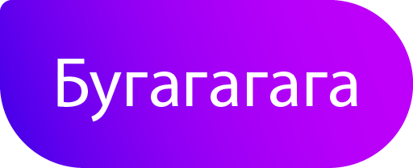
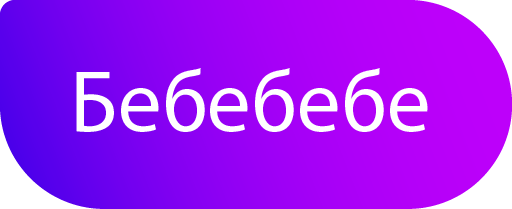
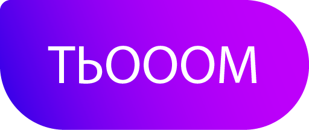
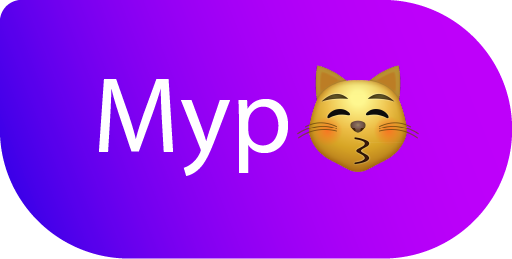
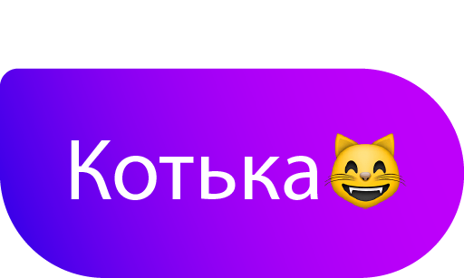
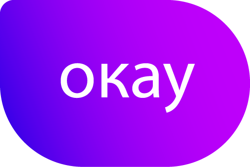
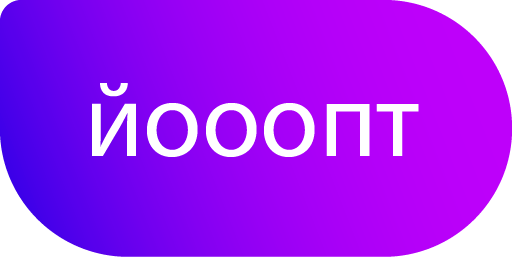
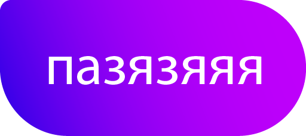
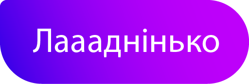
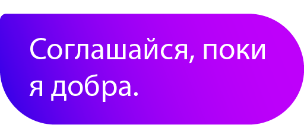
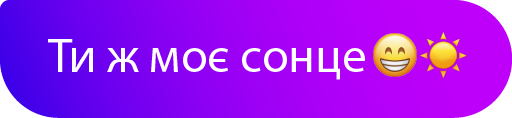
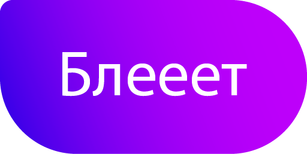
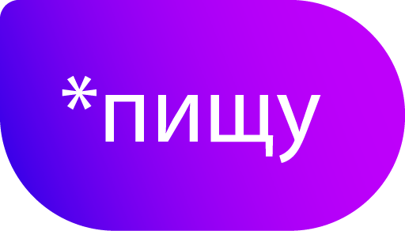
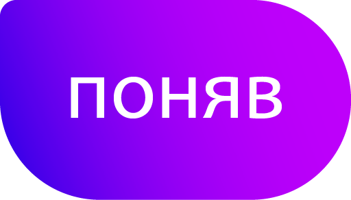
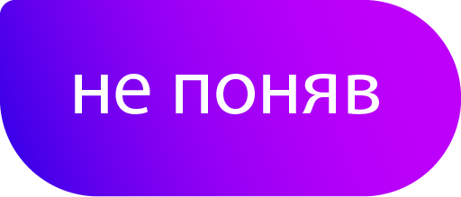
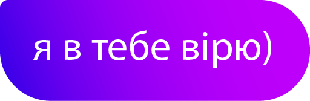
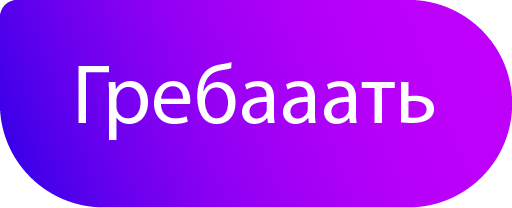
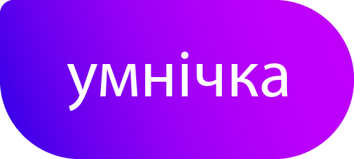
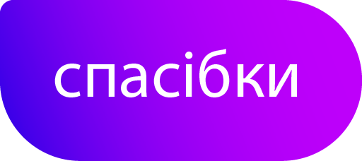
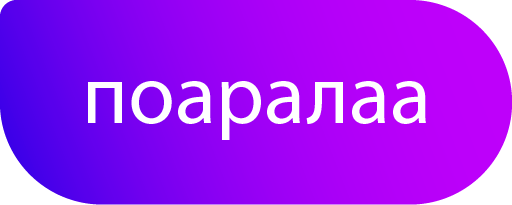
Хочеш отримати доступ до стікерів в Telegram? Тоді тицяй на кнопиночку та користуйся на здоров'ячко)
Ти відкрила новий level захоплючої гри. Та пам'ятай, що в тебе тільки одне життя, й не буде можливості поставити chackpoint або зберегтися.
Нехай для тебе цей день стане початком відліку нової історії, нових емоції, нового досвіду. Насолоджуйся життям, адже ніхто замість тебе того не зробить.
цілую та обіймаю